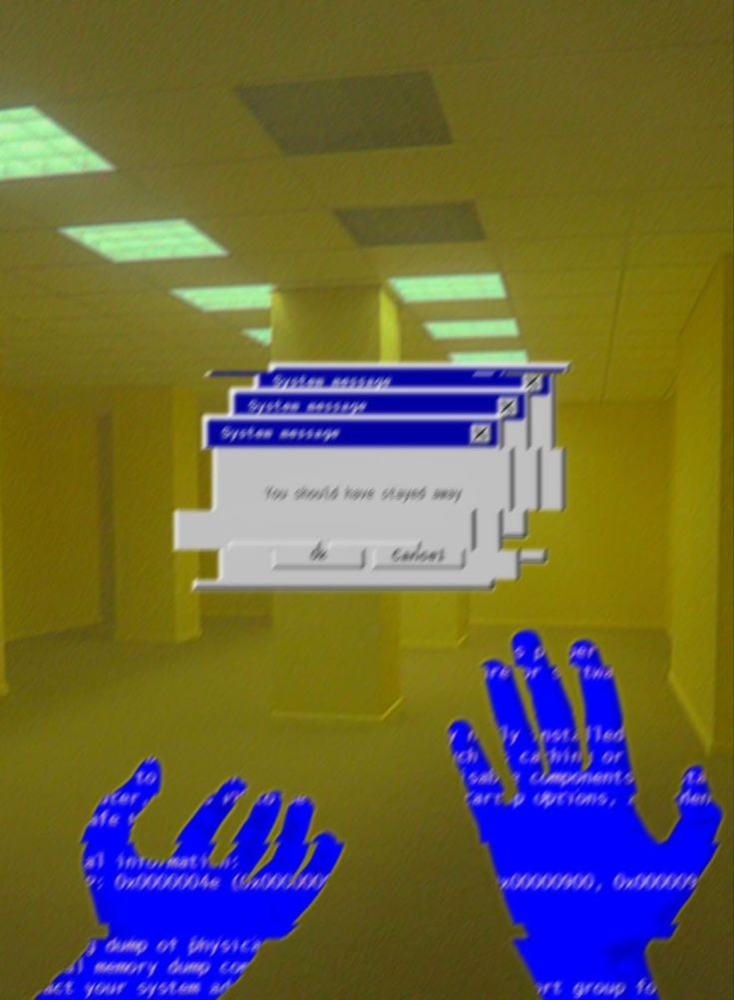

Y EL VERBO SE HIZO CARNE
Juan 1: 14 (Reina-Valera 1960): Y aquel Verbo fue hecho carne, y habitó entre nosotros (y vimos su gloria, gloria como del unigénito del Padre), lleno de gracia y de verdad.
HORROR ONTOLOGICO EXPERIMENTAL
Estuve pensando en esto mucho tiempo...

Imaginaba un horror ontológico de la siguiente manera.
En una base de investigación nuclear ocurren muchos experimentos peligrosos, como en el CERN. Un día, después de un experimento que comisionó partículas a la velocidad de la luz, surgió una singularidad de la que nadie se dio cuenta al principio. De hecho, la primera víctima fue el simple personal de limpieza: don Jorge.
Don Jorge vio a lo lejos, en una esquina del edificio, algo muy raro, pero al mismo tiempo no había nada. Esa esquina en particular se veía extraña, como si dos espejos se cruzaran; se veía la esquina fracturada o doblada, como el glitch en un videojuego que hace que ciertas cosas estén fuera de cuadro sin encajar.
Pensó que tal vez estaba con sueño. Al otro día sintió miedo al pasar por esa esquina, pero una voz en su mente le decía que no avisara. Conforme pasaban los días empezó a sentir ansiedad, alucinaciones; decía sentirse como 300 personas a la vez, o que él ya no era y era al mismo tiempo.
Don Jorge fue retirado y, para ese punto, ya todos se habían percatado de la anomalía, activando el sistema de urgencia absoluto y cercando la zona hasta unos 300 metros a la redonda. Al personal que se vio expuesto a esa anomalía le sucedió exactamente lo mismo.
Los doctores no podían acercarse a tal anomalía para no perder la cordura y así intentar averiguar qué rayos era eso y si era posible darle alguna solución. Concluyeron que podía deberse a una grieta adimensional, generando una especie de efecto de geometría no euclidiana, y que podía arreglarse con otro estallido nuclear de átomos específicos para que así se cierre tal grieta.
Sin embargo, lo aterrador no era eso, sino que parecía tratarse de un ser superinteligente, ya que las víctimas, como don Jorge, sin estudios superiores, empezaban a parlotear fórmulas físicas y matemáticas supercomplejas, o a recitar libros de literatura enteros sin cometer ni un solo error. Además, parecía ser todo un ajedrecista, ya que parecía ordenarles a las víctimas qué cosas decir para que los jefes a cargo de la situación no hicieran estallar el lugar.
Como por ejemplo, decían cosas específicas de la vida privada de ellos, de los doctores, problemas personales con sus esposas y familias. Cosas que nadie podía saber.
Pero no era nada, ni nadie detrás de esa grieta: ni una superinteligencia ni nada por el estilo. Era solo puro ruido probabilístico de alta dimensionalidad, teniendo todos los escenarios posibles. La grieta actúa como un cuello de botella, que al pasar todo ese ruido probabilístico de alta dimensionalidad por ahí, se acopla percibiéndose como superinteligencia avanzada, como si fuese un chatbot de una IA superavanzada.
Como un río que representa todo ese caos probabilístico, representando todos los escenarios posibles, pero que al abrir un pequeño canal en algún lado del río, el agua entra por el canal percibiéndose armoniosa, fluida, calmada y en orden.